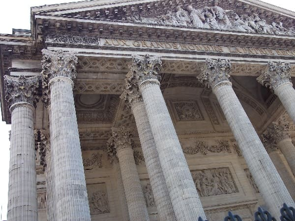

Paris es la capital y la ciudad más poblada de Francia con 12 millones de habitantes si contamos los barrios anexos..
Es también conocida como la ciudad de la luz (por ser una de las primeras en contar con el alumbrado público) y el destino mayor del mundo con 42 millones de visitantes anuales.
Cuenta entre otros monumentos con la torre Eiffel, la Santa Capilla, la Catedral de Notre Dame, La Basílica del Sagrado Corazon, (estas tres a la derecha), el Arco del Triunfo (imagen de abajo),
Los inválidos, el Panteón o la defensa.
Paris es la capital y la ciudad más poblada de Francia con 12 millones de habitantes si contamos los barrios anexos..
Es también conocida como la ciudad de la luz (por ser una de las primeras en contar con el alumbrado público) y el destino mayor del mundo con 42 millones de visitantes anuales.
Cuenta entre otros monumentos con la torre Eiffel, la Santa Capilla, la Catedral de Notre Dame, La Basílica del Sagrado Corazon, (estas tres a la derecha), el Arco del Triunfo (imagen de abajo),
Los inválidos, el Panteón o la defensa.
Además es imprescindible visitar barrios tan populares como Monmartre, también conocido como barrio de los pintores, les Halles donde podrás dar muy buenos paseos, o Montparnasse donde se encuentra la torre más alta de Paris y podrás apreciar unas bonitas vistas desde la última planta.
Además cerca de Paris hay grandes parques de ocio y entretenimiento como son DisneyLand Paris y FuturoScope lo que la hacen más atractiva a la hora de mover el turismo nacional.
Es icono de Europa sobre todo entre los estadounidenses, ya que junto a Roma la hacen de las ciudades más deseadas. Es fuente de inspiración en numerosas obras literarias y teatrales y uno de los lugares más populares para describir Europa en películas sobre todo de USA.

La palabra Paris a diferencia de otras ciudades que fueron dominio de los romanos no toma el nombre que le dieron ellos si no del pueblo celta que la habitaba.
La ciudad romana que estaba en el mismo sitio se llamaba Lutecia y el pueblo galo de los parisinos.
En el año 250 fue cristianizada por Roma y en el 360 paso a llamarse Paris. Se cree que en aquellos tiempos no sobrepasaba los 10.000 habitantes.
En el siglo IV los francos hacen capital de su reino tras echar a los romanos.
En el siglo IX se construyen murallas defensivas sobre la ciudad y en el siglo XIV se amplía esa muralla.
En el siglo XI contaba con cerca de 100.000 habitantes, una de las mayores de Europa.
En el siglo XVI se empiezan a dibujar sobre la ciudad los barrios que hay en la actualidad.
A partir de la revolución francesa empiezan notablemente cambios en la ciudad y será a mediados del siglo XIX cuando Paris se desarrolle completamente ya que el emperador de aquel momento tenía intención de que París fuese la cabeza de la vanguardia europea en arquitectura y diseño.
Prueba de ello fue que a finales de ese siglo albergo la mitad de las exposiciones universales y en una de ellas fue presentada la Torre Eiffel.
Después de estas líneas se muestra un viejo mapa de Paris, donde se puede apreciar el tamaño de Ile de France, el pequeño distrito donde hoy está todo el casco histórico y la pequeña isla donde esta Notre Dame y algún monumento más, el tamaño comparativo con el resto de la ciudad.
Con este mapa y otro más actual se puede ver el enorme crecimiento de la ciudad hasta la actualidad.


En el siglo XX Paris recibió una importante mejora en sus infraestructuras con la incorporación del metro a la ciudad.
Además se mejoraron las estaciones de trenes de aquella época y se construyeron algunas estaciones nuevas como la de Alejandro III y la de Lyon.
En la segunda guerra mundial Paris es tomada rápidamente por los alemanes y fue una ciudad que apenas tuvo desperfectos.
Sin embargo acontecieron multitud de robos por parte de los alemanes que tras la guerra serían devueltos.
En los siglos siguientes fue epicentro de las manifestaciones de Francia, primeramente a favor de la independencia de Argelia y una década después origen de las revueltas estudiantiles.
En la última década del siglo XX la ciudad experimenta notables mejoras, renovando barrios que estaban en abandono por parte de las autoridades y construyendo otros nuevos como el barrio de La Defensa, sede de multitudes empresas europeas y de casi la mayoría de las empresas Francesas.
 Además de tener los museos más conocidos mundialmente como el Louvre y el de Orsay también tiene uno de los sistemas de educación mejores del mundo.
Además de la cultura y el arte es capital de la moda y de los artículos más caros del mercado.
Además de tener los museos más conocidos mundialmente como el Louvre y el de Orsay también tiene uno de los sistemas de educación mejores del mundo.
Además de la cultura y el arte es capital de la moda y de los artículos más caros del mercado.
En Paris se han formado gran parte del talento europeo, grandes pensadores como Voltaire, escritores como Víctor Hugo, matemáticos como Descartes, pintores como Renoir, etc.
Casi la mayor parte de estos talentos fueron en el siglo XIX a partir de la revolución francesa donde el gran cambio llego a Francia. De hecho no es que nacieran tras la revolución.
sino que la cultura que se estaba creando entonces y el libre pensamiento desencadeno la revolución y el rechazo por parte de la población a la gente con privilegios por la herencia contra la burguesía, los nobles y sobre todo los monarcas.
En la imagen de la derecha puedes ver el barrio de Montmartre, donde en la actualidad alberga numerosos pintores y artistas que venden sus obras al público en general.
Paris es uno de los centros de entretenimiento y de ocio mejores de Francia. Cuenta con numerosos barrios donde existe bastante movimiento hasta altas las 4 de la madrugada, hora a la que cierran la mayoría de los locales.
Los barrios están muy alejados entre sí por lo que antes de salir habrá que conocer el plan.
Marails, Bastilla son sitios ideales para la gente joven con ganas de fiesta.
Montmartre y Pigalle es una zona donde abundan cabarets y espectáculos eróticos, ya que la zona es de las más famosas a nivel europeo.
Los Campos Elíseos es una de las zonas de más lujo de Paris donde tomar unas copas puede suponer un dineral. Ademas de la exigencia de ir con una vestimenta "adecuada".
Existen discotecas flotantes a lo largo del Sena o eso fue aquellos tiempos en los que estuve donde se concentra gran cantidad de jóvenes para empezar a beber ya sea dentro de locales o en las inmediaciones.
También existen discotecas en barrios más alejados del centro como Montparnasse donde se encontraba la discoteca Mix bajo la gran torre.
© 2016 - All Rights Reserved - Diseñada por Sergio López Martínez
![[Valid RSS]](https://www.feedvalidator.org/images/valid-rss-rogers.png "Validate my RSS feed")